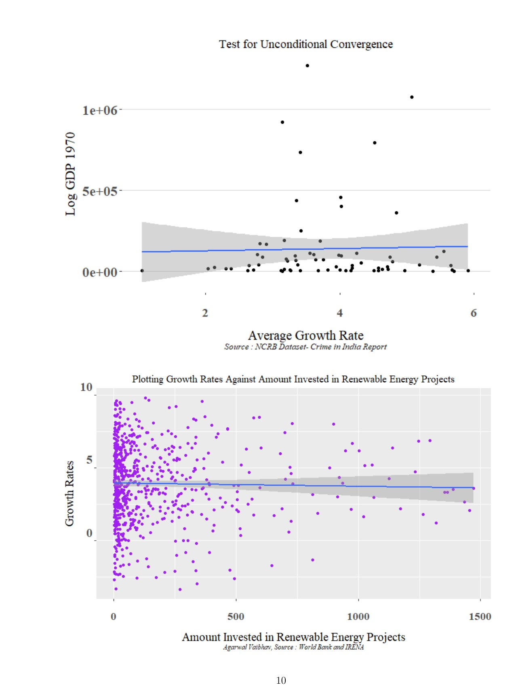

Renewable energy & economic growth


This paper adds renewable-energy investment to an augmented Solow growth model. It uses cross-country data from Penn World Table, the World Bank, IRENA and educational-attainment datasets, comparing different specifications and investment measures. The research paper, summary and SRC presentation are included below.
Files
- PDF · 16 pages
- PDF · 6 pages
- PDF · 12 pages
By Vaibhav Agarwal.